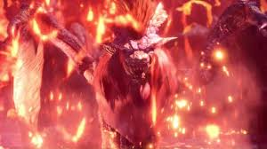

Monster Hunter: World 몬스터 헌터 시리즈에 등장하는 몬스터. 첫 출연은 몬스터 헌터 도스. 이명은 염왕룡(炎王龍). 맹수의 머리에 용의 몸을 가지고 있는 다소 특이한 형태의 고룡으로,[3] 리오레이아 & 리오레우스가 같은 종이지만 성별에 따라 나뉘어지는 것처럼 나나 테스카토리와 근본적으로는 같은 종이다.
몬스터 헌터 시리즈의 설정집인 '헌터 대전'의 내용에 따르면 몸의 유지를 위해 연석탄을 먹는다고 하며, 이 때문에 질 좋은 연석탄이 많은 화산지대에 주로 서식한다고 한다.[4] 이 때 연석탄을 섭취하면서 몸에 쌓이는 노폐물을 처리하기 위해 날개 부근에서 인화성 비늘가루를 털어낸 뒤 이빨을 부딪혀 나오는 불꽃으로 폭발시킨다. 이것을 자기방어용으로 사용하는 것이 공격 패턴 중 하나인 분진 폭발.